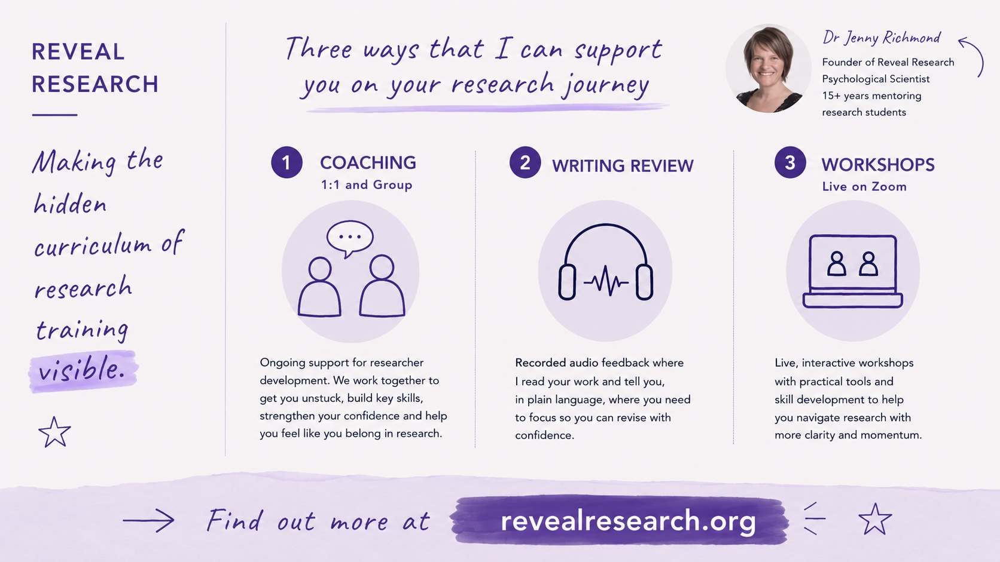
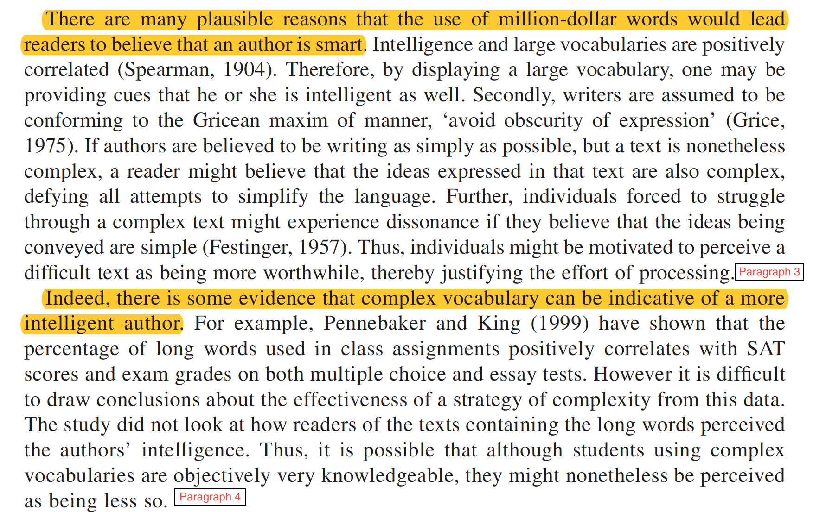

how to polish your thesis
Jenny Richmond Ph.D
These slides are available at…
about me

how to polish your thesis (and get an HD)
It is important to remember that your marker is…
- is smart and likes psychology
- is NOT an expert in your field
- has a large pile of theses on their desk
- needs to mark and write a report for each thesis
- only has a couple of weeks to finish the marking
- has a lot of other things on their plate
- is just a person
Your goal is to make their job as painless as possible
You can polish your writing using these 6 tests
- The trying-to-sound-smart test
- The 25-word test
- The zombie test
- The “this” test
- The first-sentence test
- The what-not-who test
Ready to put your reviewer 🎩 on?
1. The trying-to-sound-smart test
The trying-to-sound-smart test

Pick a page of your intro, read it aloud and circle all the words that are MORE than 3 syllables long.
Then start at the top and highlight any jargon words that your mum wouldn’t understand.
How many long/jargony words are on your page?
Replace the long words short concrete alternatives.
Ask yourself whether the jargon is really necessary.
If it is, make sure its REALLY well defined.
2. The 25-word test
The 25-word test
1 : 5 : 25 rule. Pick a page of your intro and count the words in each sentence.
How long is your longest sentence?
How many sentences do you have that are more than 25 words long?
Edit out the “fuzz”. How many words can you delete from the long sentences and have them still make sense?
If your sentences are still too long (or contain multiple phrases), put in a full stop and split the sentence into two.
3. The zombie test
The zombie test
Passive voice and nominalisations
Pick a page of your intro, search (Ctrl-F) for and highlight the following passive voice red flags.
- by
- Informed consent was obtained by the research assistant
- was & were
- A significant relationship was found…
- Participants were recruited…
Now search (Ctrl-F) for these suffixes to find nominalisations.
- -tion, -ment, -ity
- The implementation of the intervention involved the measurement of participant engagement throughout the duration of the investigation.
Put a person doing the action back into each passive sentence.
- The research assistant obtained informed consent
- The results showed that participants who had high scores on X measure also had high scores on Y measure.
- We recruited participants…
Turn the nouns you have created back into verbs and include the people doing the action in your sentences.
- assumption -> to assume
- anonymity -> to anonymise
- criticism -> to criticise
- argument -> to argue
4. The “this” test
The “this” test
The curse of knowledge means that you know what “this” (or “they” or “these”) refers to, but your reader has lost track.
Adolescents who spent more time on social media reported lower mood, but teens who used it mainly to message close friends reported higher mood than those who mostly scrolled. Parental monitoring moderated the relationship between screen time and wellbeing. This has important implications for how we support young people online, and future research should investigate this more closely.
Put your cursor at the topic of your intro and Ctrl-F “this” (and then “they”, “these”).
How many did you find?
Check that it is really clear what “this” refers to.
You can help your reader by spelling it out explicitly.
5. The first-sentence test
The first-sentence test
Your topic sentences are not doing their job.
Make a “topic sentence paragraph”.
Copy and paste each of the first sentence of each paragraph into a new document.
Does it read like a summary of your argument?

Find the “weak link” topic sentences and look carefully at that paragraph.
Rewrite the topic sentence, making sure it gives away
- always… the main point of the paragraph
- sometimes… how that idea relates to what came before
6. The what-not-who test
The what-not-who test
There is too much emphasis on “who” did the research and not enough detail about “what” they did (as well as what they found)
So & So (2025) found that weather impacted mood in high school students.
vs.
High schoolers surveyed on rainy days had lower scores on the DASS than high schoolers surveyed on sunny days (So & So, 2025).
Pick a page of your intro and find all the sentences that start with a Name(Date) citation.
How many of those are missing any mention of method?
Your marker cannot see the CRITICAL ANALYSIS you are doing, if you don’t write about method.
As you get down your funnel, check that for every study you write about, you are talking about what participants were asked to do AS WELL AS what they study found.
Where does your writing fall down?
- The trying-to-sound-smart test
- The 25-word test
- The zombie test
- The “this” test
- The first-sentence test
- The what-not-who test
WARNING: the closer you are to your writing, the harder it is to see where it is not working
Writing Review
- audio feedback
- thesis chapters
- assignment drafts
- personal statements/resumes
- fast turnaround
- $100 / 1000 words
- FAQs

Join me!
- Sept 11 & Sept 25
- 2 hours $49
- bring your results, leave with your GD outline
- Sept 18 & Oct 4
- 2 hours $49
- bring your data, leave with plots that will make your thesis stand out
- Oct 9
- 2 hours $49
- bring your project mess, leave with a system that prevents last minute chaos
Questions…
These slides are available at…
www.revealresearch.org